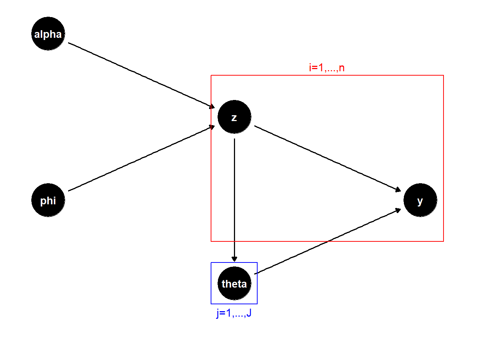

The iMGPE Algorithm
Data Model
The basic data model of the Infinite Mixture of Gaussian Process Experts model is as follows. We have an \(n\times 1\) continuous response vector \(y\) and an \(n\times d\) data matrix \(X\). The estimated value of a data point \(y_i\) under the iMGPE model is the sum of the fitted estimates for that data point from all possible GP experts fit to subsets of the data containing \(y_i\) and weighted by a Dirichlet process. Let \(z\) represent a possible vector of cluster assignments and let \(z^{(k)}\) be the \(k^{th}\) element of some ordered list of all possible \(z\). Then \(j=1,\dots,J_k\) index the clusters within \(z^{(k)}\). Let \(C_j^{(k)}\) be the number of observations in cluster \(j\) given assignment \(z^{(k)}\). Then we have as follows.
\[y\sim \sum_{k=1}^{p(n)} \left[\prod_{j=1}^{J_k} N_{C_j^{(k)}}(0,\Sigma_{\theta_j}) \right] w_k\] \[w_k=P(z=z^{(k)}|\alpha,\phi)\] where the \(w_z\) are the marginal probabilities of a modified Chinese Restaurant Process that generates cluster assignments \(z\) and \(p(n)\) is the partition function. The CRP used here has been modified to depend on the input data \(X\). It is controlled by two parameters, \(\alpha\) and \(\phi\), the first being the usual concentration parameter and the second controlling the cluster occupancy estimates. A more in-depth explanation of this CRP is provided in the iMGPE Algorithm section from last week. It should also be noted that there is no known closed form for \(w_k\). The closest I could find was the multivariate Ewen’s distribution, which describes the distribution on the set of \(p(n)\) that arises from a regular Chinese Restaurant Process. However, it only accounts for the number of clusters of different sizes, and does not serve as a marginal distribution of \(z\).
The full joint distribution, including the priors for all parameters, is as follows. Here, \(\Phi\) is the pdf of a normal distribution.
\[p(y,\theta,\phi,\alpha)=\left[ \sum_{k=1}^{p(n)} \left[\prod_{j=1}^{J_k} \Phi_{C_j^{(k)}}(0,\Sigma_{\theta_j}) \right] p(z(k)|\alpha,\phi)\right] p(\theta)p(\phi)p(\alpha)\]
Alternatively, the model can be expressed in hierarchical terms where \(J_z\) is the number of clusters in \(z\) and \(C_{j,z}\) is the number of observations in the \(j^{th}\) cluster in \(z\).
\[y|z\sim \prod_{j=1}^{J_z} N_{C_{j,z}}(0,\Sigma_{\theta_{j}})\] \[z|\alpha,\phi \sim MCRP(\alpha,\phi)\]
Here, \(N_{C_j^{(z)}}(0,\Sigma_{\theta_j})\) is the \(C_j^{(z)}\)-dimensional multivariate normal distribution with covariance matrix \(\Sigma_{\theta_j}\) defined by a Gaussian kernel function with parameters \(\theta_j\).
Then \(\theta_j\) is the parameter vector for the GP expert assigned to cluster \(j\), while \(\alpha\) is the CRP concentration parameter and \(\phi\) is the parameter vector for the CRP’s occupation number estimate. Note that \(\phi\) is purely a vector of lengthscales for a Gaussian kernel. The priors on \(\theta\), \(\alpha\), and \(\phi\) are described below.
\[\theta_{j,k}\stackrel{ind}{\sim} Gamma(a_k,b_k) \text{ for } k=1,\dots,d\] \[\alpha\sim Inv.Gam(1,1),\text{ } \phi_k\stackrel{iid}{\sim} LogN(0,1) \text{ for } k=1,\dots,d\] That is, each element \(k\) of \(\theta_j\) (the dimension of \(X\) plus a noise parameter) is assigned a independent Gamma prior with fixed parameters \(a_k\) and \(b_k\). Thus, every GP expert has the same prior on its noise parameter and so on. Similarly, each element of \(\phi\) receives an independent log-normal prior.
A third visualization of the model structure is a directed acyclic graph, shown below. Starting with the priors for \(\alpha\), \(\phi\), and \(\theta\), we can draw their values and generate our latent variables \(z\) and our true variables \(y\). Note that \(\theta\) depends on \(z\) as well as its prior, as \(z\) defines the number of clusters and thus the number of GP parameters to be drawn. The red and blue boxes indicate the quantities which are drawn multiple times for each of the \(n\) data points or each of the \(J\) clusters.
Gibbs Sampling Algorithm
The modified CRP used in this algorithm is defined by “R. M. Neal” (Algorithm 8 in that paper with \(m=1\)) and works as follows:
We represent the current cluster state with assignment labels \(z=(z_1,\dots,z_n)\) and GP parameter vectors \(\theta_1,\dots,\theta_J\) where \(J\) is the number of clusters in the current state. For \(i=1,\dots,n\), repeat the following. Let \(J^{-i}\) be the number of clusters in \(z\) with point \(i\) removed. Let \(\theta_{J^{-i}+1}\) be a parameter vector drawn from its prior distribution, in this case \(Gamma^d(a,b)\). Draw a new value for \(z_i\) with the following conditional probabilities:
\[P(z_i=j|z_{-i},y_i,\dots)\propto \begin{cases} \frac{n-1}{n+\alpha-1}\frac{\sum_{i'\neq i,z_{i'}=j} K_{\phi}(X_i,X_{i'})}{\sum_{i'\neq i} K_{\phi}(X_i,X_{i'})} f(y_i|\theta_j) \text{ for } j=1,\dots,J^{-i}\\ \frac{\alpha}{n+\alpha-1}f(y_i|\theta_{J^{-i}+1}) \text{ for } j=J^{-i}+1 \end{cases}\]
where \(f(y_i|\theta_j)\) is the normal density of \(y_i\) given the kriging equations with parameter vector \(\theta_j\) defining the kernel function.
I have implemented the Infinite Mixture of Gaussian Process Experts algorithm mostly as described by the authors Rasmussen and Ghahramani, though with a few alterations of my own which are noted below. First, I initialize indicator variables \(z\) to a set of values. I generally start by assigning all points to a single cluster. I set gamma prior distributions on the lengthscale and nugget parameters of the GP experts, using the ‘darg’ and ‘garg’ functions of the package ‘laGP’ and set initial values for \(\alpha\) and \(\phi\). This approach then iterates through the following MCMC algorithm.
- Perform a Gibbs sampling sweep over the cluster assignment indicators, using the modified Chinese Restaurant Process described in the model explanation, to generate a new cluster assignment vector \(z\).
- Fit a Gaussian process expert to each cluster in \(z\) and get ML estimates of each expert’s parameters \(\theta_j\). Note that this is not a sampling step but maximization.
- Sample the Dirichlet process concentration parameter, \(\alpha\), using quantile slice sampling with a \(Gamma(1,1)\) proposal distribution. The posterior distribution of \(\alpha\) we sample from is \[p(\alpha|n, J)\propto \alpha^{J-3/2}\exp(-1/2\alpha)\Gamma(\alpha)/\Gamma(n+\alpha)\]
- Sample the other CRP parameter \(\phi\) via random walk Monte Carlo. The random walk step uses a normal proposal distribution centered at the current value and with variance equal to \((2.38^2/d)H^{-1}\), \(d\) being the number of inputs and \(H\) the Hessian matrix of the distribution of \(\phi\). The posterior distribution of \(\phi\) we are sampling from is \[p(\phi|z,\alpha,\dots)\propto p(z|y,\phi,\alpha)p(\phi)\approx \left[\prod_{i=1}^n p(z_i|y,\phi,\alpha) \right] p(\phi)\]
- Repeat from step 1 until the MCMC output has converged.
Posterior Predictive Distribution
The paper by Rasmussen and Ghahramani does not discuss what a posterior predictive distribution would look like. However, it can be deduced based on the posterior predictive distribution of a lone Gaussian process. With \(p(n)\) and \(w_{z(k)}\) defined the same as in the original data model, we determine that the distribution of a new point \(y^*\) with data \(x^*\) is as follows.
\[y^*\sim \sum_{k=1}^{p(n)} \left[\sum_{j=1}^{J_k} N(\mu_j^*,\sigma_j^*) P(z_{y^*}=j)\right] w_k\] where \(\mu_j^*\) and \(\Sigma_j^*\) are found according to the kriging equations of a Gaussian process. That is,
\[\mu_j^*=K(x^*,X^{(j)})^TK^{-1}y^{(j)}\text{ and } \sigma_j^*=K(x^*,x^*)-K(x^*,X^{(j)})^T K^{-1}K(x^*,X^{(j)})\] where \(K\) is the covariance matrix based on parameters \(\theta_j\) and \(X^{(j)}\subset X\) and \(y^{(j)} \subset y\) are the data and response values associated with cluster \(j\).